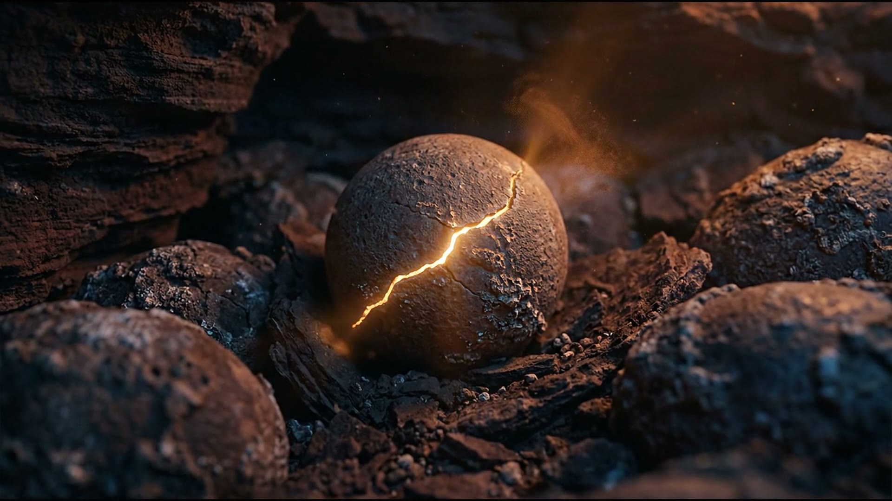

SYNK SHIFTAI 특강 메뉴
AI 특강,
도구 구경 말고
결과물 하나
학교 AI 진로 강의
기업·기관 AI 실습 강의

학교 AI 진로 강의
기업·기관 AI 실습 강의
AI 강사 · AI 진로 강사
의뢰서 체크리스트까지

AI 답을 확인하고
고치는 실습 예시

화성특례시 AI CF · 55초

여기까지는 혼자,
이 너머는 맡기기

네 가지 영상 · 정할 여섯 가지